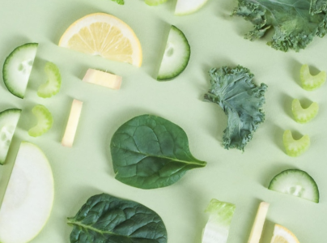

Без плиты и духовки
Салаты
Если брать салаты с собой, нужно делать их максимально сытными либо готовить в больших количествах. Ланчбоксы не резиновые, поэтому разберем, какие продукты сделают салат более калорийным.
- Мясо
- Масло и майонез
- Авокадо
- Орехи
- Сыр
- Бобовые

